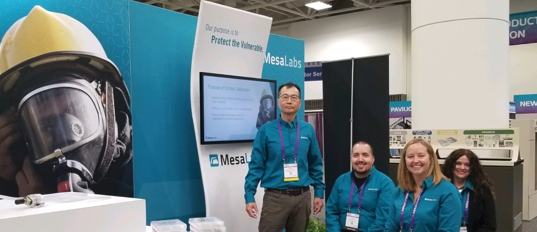
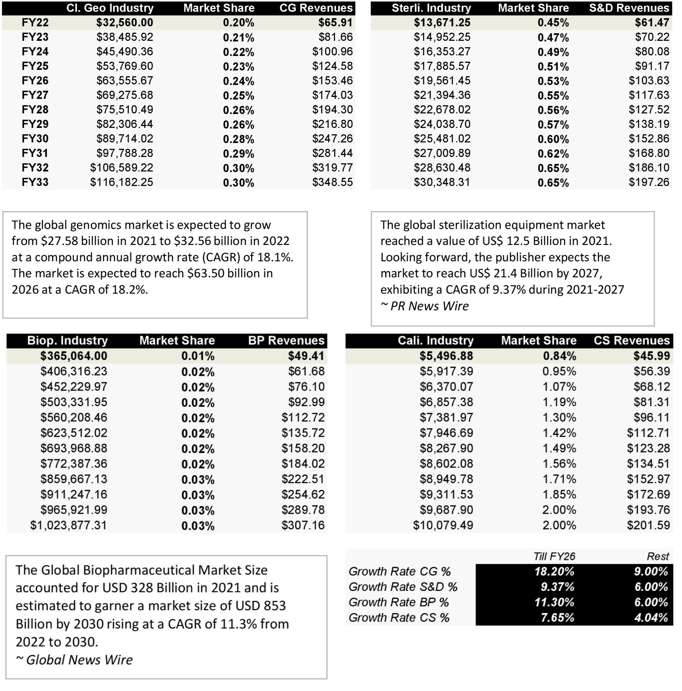
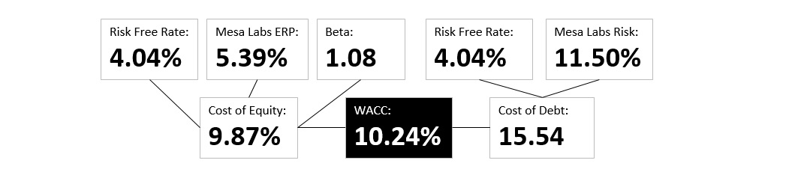
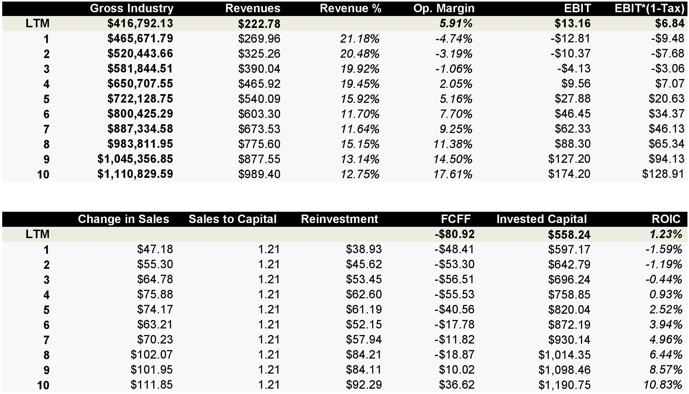
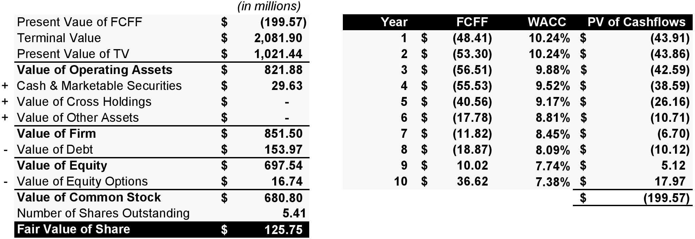

Mesa Labs - Going Beyond Calibration
Mesa Labs is a publicly-traded company that specializes in manufacturing and distributing quality control and calibration instruments for various industries, including pharmaceuticals, medical devices, and industrial manufacturing. Its business model is centered around providing high-quality products and services that help its customers ensure the safety, efficacy, and reliability of their products. It develops, manufactures, and sells life sciences tools and quality control products and services in the United States, Europe, the Asia Pacific, and internationally.     
Sterilization and Disinfection Control segment manufactures and sells biological, cleaning, and chemical indicators that are used to assess the effectiveness of sterilization and disinfection processes in the hospital, dental, medical device, and pharmaceutical industries. This segment also provides testing and laboratory services primarily to the dental industry.
Biopharmaceutical Development segment develops, manufactures, and sells automated systems for protein analysis (immunoassays) and peptide synthesis solutions. This segment's solutions include protein analysis comprising analysis equipment, CDs, kits, and buffers; and peptide synthesizers that enables to automate chemically synthesized peptides that are used in the creation of peptide therapies, biomaterials, cosmetics, and general research.
Calibration Solutions segment designs, manufactures, and markets quality control and calibration products to measure or calibrate temperature, pressure, pH, humidity, and other such parameters used for health and safety purposes in the hospital, medical device manufacturing, pharmaceutical manufacturing, and various laboratory and healthcare environments. This segment's products include continuous monitoring systems, dialysate meters and consumables, data loggers, gas flow calibration and air sampling equipment, and torque testing systems.
Clinical Genomics segment develops, manufactures, and sells genetic analysis tools that include MassARRAY system and consumables, including chips, panels, and chemical reagent solutions used by clinical labs to perform genomic clinical testing in several therapeutic areas, such as newborn screenings, pharmacogenetics, and oncology.
Business Model: Mesa Labs generates revenue through the sale of its products, which include data loggers, biological indicators, gas flow calibrators, and environmental monitoring systems. The company also provides calibration and repair services for its instruments, which generates recurring revenue streams and helps to build long-term relationships with its customers.
Mesa Labs' business model is supported by its strong focus on research and development. The company invests heavily in developing new products and improving its existing offerings, which helps to ensure that it remains at the forefront of the industry and continues to meet the evolving needs of its customers. Additionally, Mesa Labs has a strong emphasis on customer service, which is a key component of its business model. The company provides technical support and training to its customers, and has a dedicated team of customer service representatives who work closely with customers to ensure that they are satisfied with their products and services.
Company’s Strengths: (Strong brand reputation) Mesa Labs has a reputation for manufacturing high-quality, reliable, and accurate instruments and services that comply with industry standards, regulations, and guidelines. (Diverse customer base) The company has a diverse customer base across various industries, which helps to mitigate the risk of over-reliance on a single industry or customer. (Robust research and development capabilities) Mesa Labs invests heavily in R&D to develop new products, improve existing ones, and stay at the forefront of the industry.
Company’s Weaknesses: (Dependence on the regulatory environment) The company's products and services are subject to strict regulatory requirements and approvals, which can make it challenging to bring new products to market and maintain compliance with evolving regulations. (Reliance on a limited number of suppliers) Mesa Labs relies on a limited number of suppliers for some of its raw materials and components, which can pose a risk to the company's supply chain and production process.
Potential Opportunities: (Expansion into new markets) Mesa Labs could expand into new geographies or industries to increase its customer base and revenue streams. (Emerging technologies) The company could leverage emerging technologies such as artificial intelligence, machine learning, and the Internet of Things (IoT) to develop new products and services that meet evolving customer needs and improve its competitive position. (Acquisitions and partnerships) Mesa Labs could explore strategic acquisitions or partnerships to enhance its product offerings, capabilities, and market reach.
Threats that company might face: (Intense competition) The industry is highly competitive, with numerous players offering similar products and services, which could put pressure on the company's market share and pricing. (Economic and geopolitical risks) Mesa Labs' business is vulnerable to economic and geopolitical risks, including changes in trade policies, currency fluctuations, and macroeconomic volatility. (Regulatory changes) Changes in regulations, guidelines, and industry standards could impact the company's ability to bring new products to market or maintain compliance with existing ones.
Competitors: (Thermo Fisher Scientific) Thermo Fisher Scientific is a leading provider of scientific instrumentation, reagents, software, services, and consumables. The company serves a wide range of industries, including pharmaceuticals, biotechnology, clinical diagnostics, and academic research. Thermo Fisher Scientific offers a range of products and services that overlap with those offered by Mesa Labs. (Bio-Rad Laboratories) Bio-Rad Laboratories is a global leader in life science research and clinical diagnostics. The company offers a range of products and services, including quality control and calibration instruments, as well as testing and automation solutions for various industries. Bio-Rad Laboratories is a direct competitor to Mesa Labs in the quality control and calibration space. (VWR International) VWR International is a leading provider of laboratory supplies, equipment, and services to the life science, biotechnology, pharmaceutical, and healthcare industries. The company offers a range of products that include quality control and calibration instruments, and has a global presence with operations in over 30 countries.
(Agilent Technologies) Agilent Technologies is a global leader in life sciences, diagnostics, and applied chemical markets. The company offers a wide range of products and services, including analytical instruments, software, consumables, and services. Agilent Technologies competes with Mesa Labs in the areas of calibration and quality control instruments. (Danaher Corporation) Danaher Corporation is a diversified conglomerate that operates in several industries, including life sciences, diagnostics, and environmental solutions. The company offers a range of products and services that overlap with those offered by Mesa Labs, including quality control and calibration instruments. Danaher Corporation owns several brands in this space, including Hach, Pall, and Beckman Coulter.
Corporate Governance: The CEO (Gary Owens) of Mesa Labs is part of Board of Directors (which is not good in itself). Although the Chairman of BOD (John Sullivan) has power to check the work of the CEO. Whether John Sullivan is doing his work, is a question? John Sullivan was the CEO from Mar 2009 till Sep 2017. Upon his retirement, Gary Owens was apponted the next CEO of Mesa Labs and John Sullivan was appointed the chairman of the BOD. There is a high chance that John is going to guide Gary towards his idologies (growing cash flows and strategic acquisitions).
Valuation Summary
Based on the key pointers and fundamentals, here is my summary of my valuation of Mesa Labs.
Discounted Cash Flow Analysis: My base case analysis, with a Discount Rate of 10.24% based on Cost of Equity based on CAPM (Capital Asset Pricing Model) and a Terminal FCF Growth Rate of 2%, produced an implied share price of $125.75.
Equity Options and RSUs: Mesa Labs issues about $24 million worth of equity options and $20 million worth of Restricted Stock Units (RSUs) each financial year which I treated as operating expense in forecasted period for next 10 years.
Current Share Price: At $125.75, Mesa Labs appears overvalued to the implied intrinsic value from my valuation methodologies.
Other Methodologies: I do not view Precedent Transactions as meaningful due to the overly broad selection criteria as well as the lack of truly comparables deals; the public markets have also changed substantially in the past year, and the M&A transactions, many of which are from 3-5 years ago, do not reflect current market conditions.
Target Price: As a result, I selected $138.16 as my target price for my sell recommendation. Noting the fact that, the target price is based on 12 months.
Thank you for reading! Check out my valuation by downloading the Mesa Labs's Analysis below.